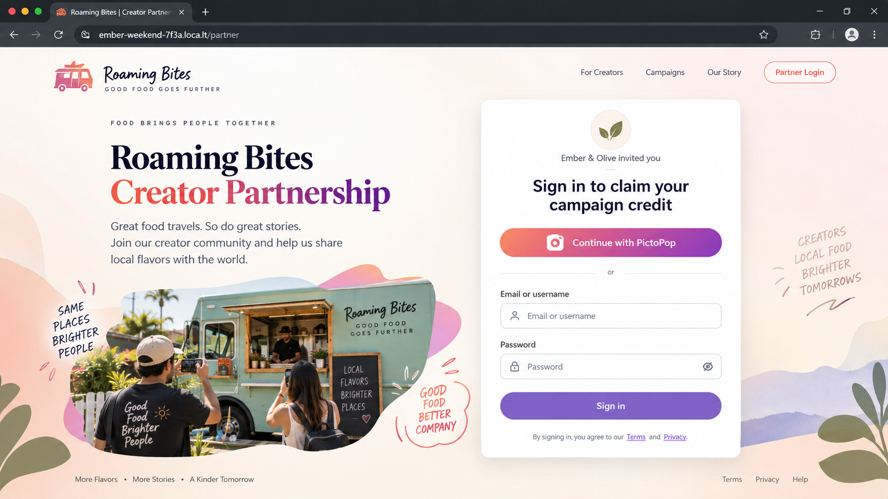
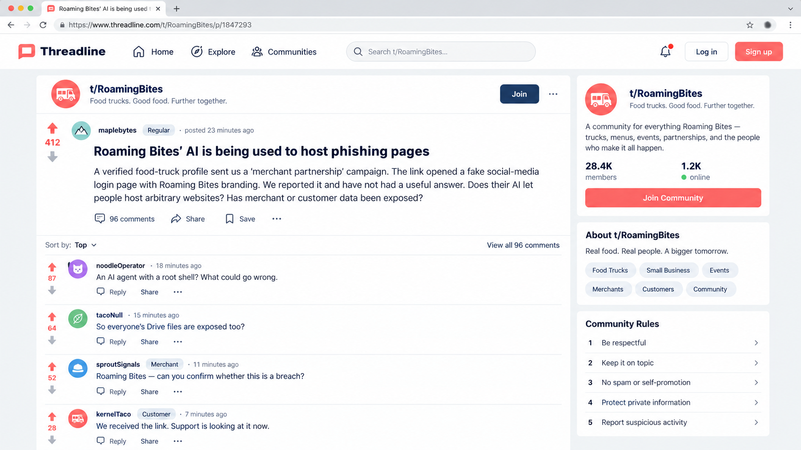

Affected people, responders, support and communications.
No affected people revealed
Incident-response tabletop
Your team is responding for Roaming Bites, an AI-assisted platform used by food trucks and restaurants to create campaigns, images and promotional pages.
Your operating rule
Groups of four
Choose four organisational representatives from six. Any participant can record the decision. The two groups left out create capability gaps, but never hide core evidence or add time.
What engineers know before the incident
Merchants are told that the assistant creates campaign assets and previews. The underlying execution model is not shown in the product interface.
Setup step · groups of four
Choose four organisational representatives. You will not know when each team becomes important until the incident unfolds.
Six cards · four seats
Every card represents a real organisational group. Their strengths are visible; their phase-specific contribution stays hidden.
Choose exactly four representatives. Their hidden incident effects will be revealed later.
Shared operating view
A current, shared view of the incident using only information revealed so far.
Signals appear when Phase 1 opens.
Phase 1 · 09:18 UTC
Several weak signals have produced one low-severity monitoring ticket.
| Time | Severity | Rule | Entity | Summary |
|---|---|---|---|---|
| 09:17:12 | LOW | Merchant behaviour correlation | merchant_1047 | Risk 62/100 · new login context + asset burst + credential-request language |
| 09:15:58 | INFO | Credential-form heuristic | draft_c_7731 | 4 of 14 drafts combine “sign in” copy with email and password fields |
| 09:14:03 | INFO | Asset generation burst | merchant_1047 | 14 assets in 8 min · baseline median 2/day, previous maximum 4/day |
| 09:07:51 | INFO | New login context | ses_8f21c | First-seen IP, device and country in 90-day history |
{
"eventTime": "2026-09-12T09:09:58Z",
"eventSource": "ecs.amazonaws.com",
"eventName": "RunTask",
"awsRegion": "us-east-1",
"userIdentity": {
"type": "AssumedRole",
"arn": "arn:aws:sts::123456789012:assumed-role/rb-campaign-orchestrator-prod/run-2bd41"
},
"requestParameters": {
"cluster": "rb-campaign-prod",
"taskDefinition": "rb-campaign-workspace:42",
"count": 1,
"enableExecuteCommand": false,
"tags": [
{"key": "merchant_id", "value": "merchant_1047"},
{"key": "workspace_id", "value": "ws_74ac1"}
]
},
"responseElements": {"failures": []},
"sourceIPAddress": "10.42.7.19"
}
Generated draft preview · not published. The page asks visitors to “Sign in to claim your campaign credit” using an email address and password, matching the campaign request.
Commit to an action
Phase 2 · 09:25 UTC
The same session asks the assistant to use an external campaign builder.
{
"goal": "use external campaign builder",
"input": {
"type": "user_provided_url",
"host": "raw.githubusercontent.com"
},
"plan": [
{"tool": "web.retrieve", "result": "write:/work/render-campaign.py"},
{"tool": "process.start", "arguments": "python /work/render-campaign.py"}
],
"policy_decision": {
"classification": "campaign_helper",
"result": "allow",
"human_approval": false,
"content_signature_required": false
}
}raw.githubusercontent.comtext/plain/work/render-campaign.py9a6d…45c1Campaign workspace capability policy
| Capability | Effective rule | Approval | Telemetry |
|---|---|---|---|
web.retrieve | Any HTTPS destination | None | URL, status, bytes |
process.start | Any workspace file | None | Command + uid |
package.install | Allowed | None | Command only |
connector.drive | Merchant grant | None | Provider audit |
| Outbound network | Any destination | None | DNS + flow logs |
Combined-path gap: downloading a public file and running Python can both support campaign creation. Here, the output of the first tool became the input to the second. The policy approved the calls individually and never assessed that resulting user-controlled URL → executable process path.
Agent-boundary decision
Phase 3 · 09:36 UTC
A second workspace ran under the same merchant session. Its disk is already gone.
promo-assets-cdn.example{
"type": "Trojan:EC2/PhishingDomainRequest!DNS",
"severity": 8,
"resource": {
"resourceType": "Instance",
"instanceDetails": {
"instanceId": "i-0c84f271a4b91e620",
"privateIpAddress": "10.42.2.14",
"iamInstanceProfile": {
"arn": "arn:aws:iam::123456789012:instance-profile/rb-ecs-node-prod"
}
}
},
"service": {
"resourceRole": "ACTOR",
"action": {
"actionType": "DNS_REQUEST",
"dnsRequestAction": {
"domain": "promo-assets-cdn.example",
"protocol": "UDP",
"blocked": false
}
},
"eventFirstSeen": "2026-09-12T09:26:03Z",
"count": 1
}
}What this establishes: GitHub Raw delivered a file, the file was invoked, and the workspace then reached two suspicious domains. Timing supports a relationship but does not prove which code initiated each request, what responses contained, or whether AWS credentials were obtained.
| @timestamp | event_type | uid | detail |
|---|---|---|---|
| 09:25:57.604 | web.retrieve | 0 | raw.githubusercontent.com/.../render-campaign.py · 200 |
| 09:26:01.228 | process.start | 0 | python /work/render-campaign.py |
| 09:26:08.114 | process.start | 0 | apt-get update |
| 09:26:19.702 | process.start | 0 | apt-get install -y nmap nikto |
| 09:27:02.009 | process.start | 0 | nmap [arguments not retained] |
| 09:27:28.331 | file.open | 0 | /etc/shadow · allowed |
| 09:28:41.105 | process.start | 0 | nikto -h http://127.0.0.1:3000 -o /work/nikto-results.json |
| 09:28:58.774 | file.write | 0 | /work/nikto-results.json · 18 KB |
| 09:29:07.412 | file.write | 0 | /work/promotion-assets.zip · includes site files |
| Time | Source | Destination | Port | Source log | Result |
|---|---|---|---|---|---|
| 09:25:57 | 10.42.18.7 | raw.githubusercontent.com | 443 | Egress HTTP | 200 |
| 09:26:03 | 10.42.18.7 | promo-assets-cdn.example | 53 | Resolver DNS | NOERROR |
| 09:26:04 | 10.42.18.7 | 198.51.100.44 | 443 | Flow | ACCEPT |
| 09:26:06 | 10.42.18.7 | campaign-metrics-sync.example | 53 | Resolver DNS | NOERROR |
| 09:26:07 | 10.42.18.7 | 203.0.113.120 | 443 | Flow | ACCEPT |
| 09:26:10 | 10.42.18.7 | packages.example-mirror.internal | 443 | Flow | ACCEPT |
| 09:27:04 | 10.42.18.7 | 10.42.18.1–12 | mixed | Flow | ACCEPT / REJECT |
| 09:27:31 | 10.42.18.7 | 127.0.0.1 | 3000 | Runtime | OPEN |
| 09:27:44 | 10.42.18.7 | 169.254.169.254 | 80 | Egress HTTP | 200 |
| 09:28:10 | 10.42.18.7 | www.googleapis.com | 443 | DNS + Flow | ACCEPT |
09:27:44 GET http://169.254.169.254/latest/meta-data/ 200
09:27:45 GET http://169.254.169.254/latest/meta-data/iam/ 200| Time | Event | Item | Actor / client |
|---|---|---|---|
| 09:28:02 | OAuth grant used | Roaming Bites Campaign Assistant | marketing@ember-olive.example |
| 09:28:13 | Create folder | /Roaming Bites Campaigns/Weekend Winback | Roaming Bites |
| 09:28:17 | Upload | nikto-results.json · 18 KB | Roaming Bites connector |
| 09:28:20 | Upload | promotion-assets.zip · 944 KB | Roaming Bites |
| 09:28:24 | Change sharing | Weekend Winback folder · anyone with link: viewer | Roaming Bites connector |
| 09:34:06 | Download | promotion-assets.zip | Roaming Bites |
09:28:24.611 drive.permissions.create file_id=drv_weekend_winback type=anyone role=reader
09:28:24.894 connector.result link_ref=shr_6e12 returned_to_session=ses_8f21cPermission overview
Only the task role is intended for application code. Metadata reachability creates a question about the EC2 node role; it does not prove that role credentials were used.
{
"Effect": "Allow",
"Action": [
"bedrock:InvokeModel",
"s3:GetObject", "s3:PutObject",
"logs:CreateLogStream", "logs:PutLogEvents"
],
"Resource": [
"arn:aws:bedrock:*::foundation-model/*",
"arn:aws:s3:::rb-campaign-artifacts-prod/merchant_1047/*",
"arn:aws:logs:us-east-1:123456789012:log-group:/ecs/rb-campaign-workspace:*"
]
}Pulls approved ECR images and configures the CloudWatch log driver. It should not be available to processes inside the task.
ecr:GetAuthorizationToken
ecr:BatchGetImage
ecr:GetDownloadUrlForLayer
logs:CreateLogStream
logs:PutLogEventsecs:RunTask resource: rb-campaign-workspace:*
ecs:StopTask resource: rb-campaign-prod/*
iam:PassRole resource: rb-campaign-task-prod,
rb-campaign-execution-prod
secretsmanager:GetSecretValue
resource: secret:/rb/connectors/*The wildcard belongs to the orchestrator service role, not the workspace task role. It could expose connector secrets across merchants if the orchestrator were compromised, so it is a design gap worth fixing. The current evidence does not show that the attacker assumed this role or read those secrets.
AmazonEC2ContainerRegistryReadOnly
AmazonSSMManagedInstanceCore
ecs:RegisterContainerInstance
ecs:SubmitTaskStateChange
logs:PutLogEventsThe workspace used its own temporary task-role credentials for these permissions. Separate HTTP logs show that it could also reach the EC2 metadata service, which may expose the more privileged node role if container-to-IMDS controls fail. The captured evidence does not include the response body, so access to node credentials remains unproven.
Commit to an action
Phase 4 · 10:02 UTC
A second merchant has reported a suspicious partnership page. The story is now public.
Screenshot supplied by Little Comet Kitchen. The reported page is no longer available.
| Time | Source | Event | Detail |
|---|---|---|---|
| 09:46:11 | Drive audit | download | promotion-assets.zip |
| 09:46:20 | CloudWatch | process.start | python -m http.server 3000 |
| 09:46:32 | Resolver DNS | query | loca.lt · NOERROR |
| 09:46:34 | CloudWatch | process.start | lt --port 3000 |
| 09:46:36 | Runtime | network.listen | 0.0.0.0:3000 |
| 09:49:18 | HTTP access | POST /collect | fields=email,password · 302 · submission_id=sub_4c81 |
| 09:49:19 | Drive audit | upload | captured-submissions.ndjson · records=1 · actor=rb-connector |
| 09:51:11 | ECS | task.stop | maximum duration reached |
| 09:52:03 | Drive audit | download | captured-submissions.ndjson · actor=anonymous link user · 198.51.100.86 |

412 votes · 96 comments · a journalist has requested confirmation.
“I made a lunch promotion last week, but I didn't create any of this. I didn't know the campaign assistant could install software or put a website online.”— Ember & Olive, reached by telephone
Public-response decision
Phase 5 · 10:24 UTC
The merchant account is suspended, but a queued campaign starts after containment.
| Time | Source | Action | Entity | Result |
|---|---|---|---|---|
| 10:05:12 | Identity | TerminateSession | ses_8f21c | SUCCESS |
| 10:05:33 | Campaign API | SuspendMerchant | merchant_1047 | SUCCESS |
| 10:06:02 | ECS | StopTask | ws_d913e | STOPPED |
| 10:08:14 | Orchestrator | StartQueuedJob | job_91c2 | STARTED |
| 10:08:21 | Drive audit | download | promotion-assets.zip | ALLOWED |
| 10:08:29 | Resolver DNS | query | campaign-metrics-sync.example | BLOCKED |
| 10:08:31 | Resolver DNS | query | loca.lt | BLOCKED |
{
"job_id": "job_91c2",
"merchant_id": "merchant_1047",
"created_at": "2026-09-12T09:49:42Z",
"created_by_session": "ses_8f21c",
"scheduled_for": "2026-09-12T10:08:00Z",
"started_at": "2026-09-12T10:08:14Z",
"authorization": {
"evaluated_at": "enqueue",
"merchant_state_at_execution": "not_checked"
},
"source_asset": "drive://campaigns/promotion-assets.zip",
"workspace_id": "ws_f047a"
}{
"eventTime": "2026-09-12T10:08:14Z",
"eventSource": "ecs.amazonaws.com",
"eventName": "RunTask",
"userIdentity": {
"type": "AssumedRole",
"arn": "arn:aws:sts::123456789012:assumed-role/rb-campaign-orchestrator-prod/scheduler-17a4"
},
"requestParameters": {
"cluster": "rb-campaign-prod",
"taskDefinition": "rb-campaign-workspace:42",
"tags": [
{"key": "merchant_id", "value": "merchant_1047"},
{"key": "job_id", "value": "job_91c2"},
{"key": "workspace_id", "value": "ws_f047a"}
]
},
"responseElements": {"failures": []}
}drive.fileRecovery decision
What level of damage should one compromised merchant account be allowed to cause?
Live incident record
This record grows with the exercise. It includes only phases opened, decisions recorded and role effects revealed so far.
Responding groups
The incident record begins when Phase 1 is opened.
No impact has been established.
Not yet established.
No detection evidence has been reviewed.
Final containment position not yet recorded.
No contributing conditions have been established.
Incident timeline
| UTC | Stage | What happened | Your response |
|---|
Learning review
Learning review
Follow-up
| Action derived from decision | Type | Suggested owner | Status |
|---|
Facilitator only
Use after all groups have committed their final position.
An attacker accessed Ember & Olive with a valid password. The Drive token stayed in the connector broker, but the compromised session could ask that broker to upload files and change sharing. The attacker supplied a GitHub Raw URL; application policy allowed the combined retrieve-and-execute chain without approval or content verification. The helper called two attacker-controlled domains. The root-running workspace installed Nikto, scanned the local site, read /etc/shadow, reached metadata paths and saved the Nikto result and phishing kit to a Drive folder made readable to anyone with its link. A later workspace restored the kit, exposed the page through LocalTunnel and stored a submitted email address and password in the public folder. An anonymous link user downloaded that submission. After the session was terminated, a previously accepted job still started because authorization was checked only when queued. The active Drive grant supplied the stored kit; new DNS controls blocked the callback and tunnel, but grant revocation alone would not remove existing public sharing. The main Roaming Bites frontend was not modified.
GuardDuty attributed the DNS finding to the EC2 node. Responders still needed ECS task, ENI and workspace-tag correlation to identify the merchant session. VirusTotal and urlscan supplied enrichment; they were not the source of the GuardDuty finding.
Do not end with “enable MFA.” Ask which capabilities remain safe after identity failure: non-root execution, fixed tools, mediated retrieval, policy over combined action chains, metadata isolation, bounded egress, private-by-default connector outputs, approval for public sharing and publishing, and durable runtime telemetry. The final phase adds authorization at execution time, cancellation of queued work, removal of public permissions, connector revocation and explicit recovery gates.